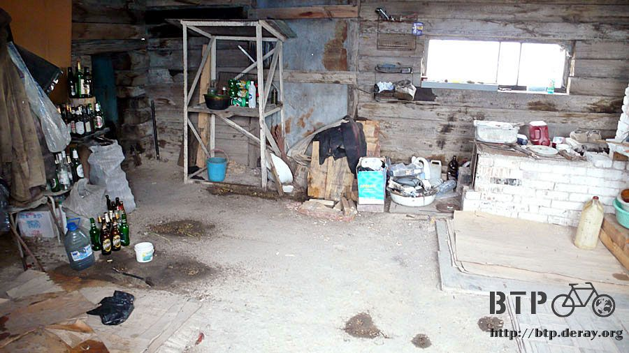
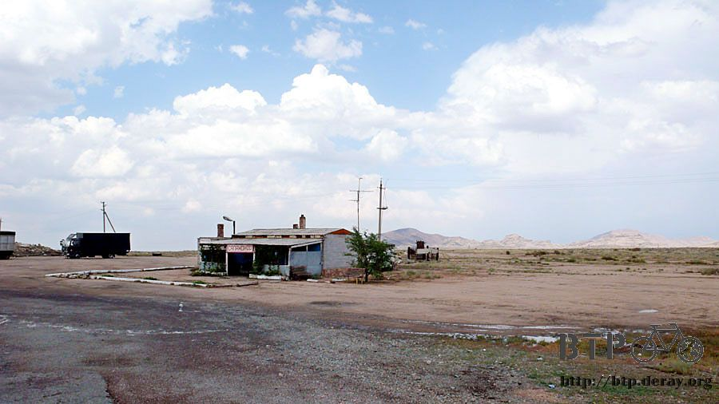

大睡一場
早上天微亮，就醒過來，昨天整夜沒睡好，只能算是閉著眼睛躺在帳篷裡餵了一夜蚊子而已。
兩隻手臂全都是大大小小的蚊子包，清查慘況，一共被咬了四十幾個腫包，拿出小護士塗，結果兩隻手都塗得滿滿的。
經歷昨天的混亂，讓我的腦袋無法正常運轉，思考了一下接下來要做的事情和順序，一陣肚子劇痛，馬上就提醒了我，昨天還在上吐下瀉。

要做的事情第一優先就是找地方拉肚子。
老天爺沒有遺棄我，這個加油站可以很輕易的找到水龍頭，而且扭開還真的有水可以用，趁著大清早沒什麼人，就在馬路邊脫光擦身體。
渾身疲憊加酸痛的收拾行李，除了手機被拿走之外，還有沒有弄掉什麼，一時之間真的搞不清楚。
昨天吐個不停，又吃不下東西，肚子全是空的，等於一整天什麼也沒吃，但是又沒有任何胃口想吃東西。
現在給我一間五星級的餐廳，然後問我想吃什麼？
請給我一杯白開水，謝謝。
在離開市區之前，有一項很重要的事情要處理，我要繞回餐廳拿手機。
祈禱白天阿漏思安睡醒之後神智會正常，並且記得我的手機(或是手機殘骸)在哪裡，如果他繼續發瘋，那我不惜跟他大打一架，也要拿回手機。
餐廳一早果然是關閉的，裡面有個打掃的歐巴桑幫我開門，我說我要拿電話，她說晚一點再來，現在店裡沒有人。
在商店買一瓶礦泉水，現在總算能喝的下水，不會像吐水的玩具一樣。
這邊的商店很好笑，明明是開店的，但是零錢缺的跟什麼一樣，買個水拿一百元的硬幣給她，居然連三十元的硬幣都找不回來。
跟我攤攤手說沒有錢可以找，這是怎樣？自動從七十元進位變成一百元嗎。
因為沒錢找，所以店員拿了幾顆口香糖跟一包火柴盒給我代替找零。
在市區繞了一下，利用這個時候再找找有沒有網路可以用，但是什麼也找不到，純粹是浪費時間。
八點回到餐廳門口，門依然是緊閉的，我敲敲門，同一個歐巴桑又來開門，我說我要拿手機。
她心不甘情不願的帶我往餐廳裡面走，指著桌上的一具室內電話。
我說不是這個，是我的手機！昨天被阿漏思安拿走的手機。
語言無法溝通，但是阿漏思安的名字她聽得懂，就帶著我往後院走，阿漏思安還躺在床上蒙頭大睡。
我跟歐巴桑說，妳知道他是個瘋子嗎？
在餐廳和後院反覆搜尋，最後在外頭的沙地上找回手機，雖然佈滿刮痕，但依然能用。
拿回手機之後，頭也不回的離開這個城市，沒游到泳就算了，這邊沒什麼值得我留戀。
在離開巴爾哈許的邊界時，被餐廳的店員揮手招喚過去吃早餐。
經歷了昨天的混亂，其實現在要是有陌生人又揮手要我過去休息順便聊個天，我都會猶豫一下，或是點個頭表示禮貌，繼續騎車離開。
雖然這樣很困難，但是我一直跟自己說，不要因為一個瘋狂的人，就破壞對哈薩克人友善的印象。
但可能是昨天的衝擊太突然也太強烈，對我的打擊有點大，一樣是有人在路邊對著我瞧，之前我會覺得是善意的，現在則覺得是惡意的打量。
站在城市末端的告示牌，看著餐廳的人，他們像是好人，而且壞人不會那麼早起，所以我還是靠了過去。
老闆跟老闆娘都是很友善的人，因為我沒有吃東西的胃口，好不容易才勉強能喝水，怕一吃東西又把肚子搞掛掉。
我只點了一杯奶茶喝，但是老闆娘還是主動端出了有番茄和黃瓜切片、三顆荷包蛋的早餐。
聊天中漸漸重拾對哈薩克人的好印象，只能說每個人際遇不同吧。
更讓我對自己的要求嚴苛，因為我在哈薩克旅行，每次當我拍胸脯說自己是台灣人，就代表著我是台灣來的人，也是他們對台灣的印象。
要是我做了什麼讓當地人覺得厭惡的事情，他們不只是覺得我這個人很討厭，更連帶的對台灣的印象也會很差。
早餐店的餐點很好吃，大家也都很友善，聊天中我說要往首都去，順便得到路線的情報，可惜都是錯誤的。
他們說往首都走都是平路，而且沿路上都會有商店跟餐廳可以補給。
我心裡想說終於可以擺脫山坡路和荒涼的景致，但接下來還是那個樣子，除了荒涼依然荒涼。
老闆從屋裡拿出一頂全新的白色帽子說要給我，讓我帶著擋太陽，我指著頭上說已經有一頂了。
但是老闆堅持要我收下，說這是哈薩克人的禮物，巴爾哈許人的友情。
吃了一頓飯，感覺精神跟體力都好了一點，雖然身體不舒服，但還是要騎一天的車，總不能光靠開水就撐一整天吧。
指著被一掃而空的餐盤，問這一餐要多少錢，老闆娘比了一百元的手勢，實在是太便宜了。
我拿出一張兩百元，並揮手表示不用找零了，並不是因為我很有錢，而是感謝他們在我心靈很需要溫暖的時候向我伸出雙手。
臨走前順便裝滿兩個水壺，一壺裝開水，一壺裝熱紅茶，糖給它一匙一匙的加進去。
離開這個大煙囪的城市，今天的風向又不一樣，煙往不同的地方飄，我指著煙囪做出咳嗽的動作，大家都表示同意，並且七嘴八舌的說煙囪的壞話。

繼續上路之後，其實我已經很厭倦哈薩克騎車的風景，一成不變，很悶，身體又不好，超沒力。
路上我唯一能做的事情就是聽排氣管的聲音，猜後面的車子有幾個輪胎？是小轎車還是大貨車？他會不會主動讓路繞過我？
萬一感覺聲音不太妙的時候，我就乖乖的離開道路，自己先閃車子比較保險，畢竟路上小動物的屍體已經夠多了，沒有增加的必要。
眼前望去前方是黑壓壓的烏雲，風向則是強烈的側風，由左向右吹，烏雲則在天空緩慢的漂動著，遠方雨霧飄渺。
一開始都是小小的雨滴，像昨天夜裡的那種雨，下不到十分鐘就會停止，就壓低帽子淋一下雨。
精神實在太渙散了，淋點雨可以讓我清醒一下。
下過雨之後的路上都是積水，急駛而過的車輛捲起滿天飛舞的水花，水滴濺的到處都是，小多、包包、外套和我的臉。
雨時下時停，大魔王還在前面等著我，一整片的烏雲像從地上長出來，或是因為負載太多水汽，太重而拖著尾巴在地面漂浮的樣子。
一進去烏雲的範圍，就是轟然的雷聲大響，強烈的逆風吹得我往路邊斜坡橫向的騎。

雨滴又大又快的落下，打到身上痛得讓我懷疑這是雨滴還是冰雹，風勢太強，雨勢又大，躲到路旁的排水孔歇一陣子。
有好幾次我都想要在這樣的地方搭帳篷過夜，可是這些地方都已經充滿了前人的大便，一點想讓人睡覺的念頭都沒有。

風向是吹橫的，所以躲在這邊正好可以擋住雨勢，下雨之後，久旱逢甘霖，不知從何處冒出小青蛙，往草原跳去。
躲了一陣子，雨勢終於歇緩，不是雨下完了，而是因為風太大，烏雲被吹著跑，一路往東邊降雨水，讓這乾枯的大地得到滋潤。
拍掉座椅上的雨滴，重新將小多牽回路面，下過雨的空氣好新鮮，沒那麼炎熱，閉上眼睛多吸兩口，馬上又被大貨車捲起的水花給濺得滿臉都是。
一路上只看到一棟建築物，招牌不是熟悉的餐廳或商店，靠過去一看裡面只放了一大堆的空酒瓶，補給的期盼落空。

騎到下午三點終於有點人煙，一間小小的餐廳，掛的招牌也是看不懂的字。
之後問了餐廳的女兒，才知道這是她兩個哥哥名字的縮寫，哥哥都在哈爾哈許工作，這裡只剩下她跟婆婆兩個人顧店。

抵達這裡，婆婆探出頭來看我，我說這邊是商店嗎？她問我要什麼？
拿出空水壺比出喝水的動作，然後婆婆拿了一大瓶的可樂給我，身體覺得比較好了，喝這個應該不會太刺激。
坐在店外頭屋簷下的平台，婆婆問我剛剛下大雨的時候我怎麼辦？
我蹲在地上，用手抱著頭，說剛剛就是這樣在路邊躲雨，婆婆笑得很開心，指著木頭平台，問我要不要在這邊睡一下？
其實我今天已經不想再騎車了，要是可以在這邊住一個晚上不知道該有多好。
剛剛的大雨讓屋頂漏了水，木頭平台有點淋濕，婆婆鋪上了一大條的地毯，我自己則拿出睡袋攤開，昏沉沉的睡著。

從下午三點睡到晚上八點，在講話的聲音中醒過來，這時的感覺終於好一點。
搖搖晃晃的走路去一百公尺外的廁所尿尿，夕陽的影子讓我長高了，腳看起來很長。

屋子外頭有一個接著電線桿的設施，好幾次我都想說要怎麼樣才有辦法偷接電線桿的電來用。
看到這麼複雜的裝備，看來沒那麼容易才是，雖然有這樣的設備，可是這裡要等到晚上九點過後才有電力供應，白天是完全沒有電的。
這邊養了兩隻狗，都是大隻的，用鏈子拴在外頭，這就是你們不乖會對人吠的下場，好好反省吧。
屋子裡則養著一隻才幾個月大的小貓咪，滿屋子裡外活潑的跑。
用毛巾洗把臉，一團糨糊的腦袋稍微還原成本來的形狀，這時候才有辦法開口聊天講講話。
家裡的小女兒叫做『莎爾坦娜』，才十四歲而已，這邊不只是餐廳或是商店，而是他們的家，這裡有個地名『別克島阿達』，可是只有一棟房子而已，無比的空曠。
婆婆的名字是『努米娘』，她下午三點問我要不要睡一下，大概沒有想到我這個睡一下，就是一口氣睡到晚上八點。

看到我好不容易醒過來，問我想吃東西嗎？
身體時好時壞，所以還是只點了熱奶茶，但是婆婆還是貼心的送上了燴飯配漢堡肉，淋上醬汁的飯軟軟的，吃起來很像稀飯，很好消化。
配上熱熱的奶茶，沒想到自己的胃口恢復的還蠻不錯的。

婆婆笑著問我說要繼續往下騎嗎？還是今天就住在這裡？
我有點不好意思的說，晚上可以讓我在這邊搭帳篷嗎。
一邊搭帳篷的時候，小貓就在帳篷和行李堆中到處跑竄。

晚上九點過後，電力終於來了，亮著燈的房子在夜色中特別清楚，路過的車輛都會停下來買個水或是吃點東西。
一個小女兒跟一個婆婆兩個人還有點忙不過來，利用恢復的電力，終於可以充電，好多東西的電力都已經乾枯。
婆婆說晚上路過的司機很多，我這麼多包包放在外頭有點太顯眼，怕被人隨手拿手，所以晚上我睡覺的時候，包包放在房子裡面比較保險。
在哈薩克好像每天都在露營，同時磨練我的毅力，也消磨著我的精力，一開始覺得露營很好玩，後來覺得露營很累，睡不好又不能洗澡，
現在已經漸漸覺得露營是常態，只要有個屋頂跟燈光就心滿意足了。
哈薩克之旅不比旅館遍佈的中國輕鬆，都已經待十天了，早點習慣吧～接下來的俄羅斯搞不好更荒涼呢。

在房子裡面將必要的東西充好電，照片存到電腦裡頭，遊記還沒有整理，因為那時候腦袋才剛恢復正常。
昨天在巴爾哈許發生的事情，在那個狀態寫下來的遊記，只怕會出現很多像是：
『哈薩克只適合給喜歡蒼蠅滿天飛的人來旅行』
『這邊除了荒涼之外沒有別的值得一看的景色』
所以打算有空的時候再來補寫，再說身體才在好轉當中，能夠早點睡覺就別熬夜了，反正寫好也沒網路讓我上傳，就先擱著吧。
睡前婆婆問我明天幾點會出發呢？我想了一下，說大概七點的時候會走。
婆婆說要是那時候她們還沒起床的話，我就敲敲門，她們就會開門讓我進來拿行李。
跟繼續忙碌的婆婆和小女兒說晚安，我走回外頭舒服的帳棚準備睡場大頭覺，其實睡在帳篷裡面也很不錯呢～
要是不要缺東缺西的，將睡袋、睡墊這些都放進去的話，加上帳篷的庇護，其實睡起來都很舒適。
深夜裡爬起來尿尿的時候，屋子的電力又歸零了，四周一片寂靜，連吠了我半天的大狗都打鼾在睡覺。
在寒風中抖一抖，快步跑回溫暖的睡袋中，離天亮還有好幾個小時，可以大睡一場。
繼續閱讀：7.6 友誼帶著走
哈薩克-堅戈－ 1：0.26 台幣
7.5 |
總計：700元 |
礦泉水70元、不找零的口香糖30元、早餐200元、可樂200元、晚餐200元 |
|